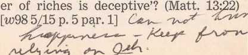

August 2000 For United States of America km-E Us 8/00 Vol. 43, No. 8
“Fight the Fine Fight of the Faith”
'The apostle Paul admonished Timothy to “fight the fine fight of the faith.” (1 Tim. 6: 12) Paul himself lived up to those words. Late in his life, he spoke with assurance that he had personally fought a good fight. (2 Tim. 4:6-8) In every way, he pursued the ministry with boldness, courage, and endurance. By imitating his example, we can have the same inner assurance that we are doing the best we can in our fight for the Christian faith.
2 Expend the Effort Needed: Paul worked hard in the ministry. (1 Cor. 15:10) So do we as we search to find all the deserving ones in our territory. (Matt. 10: 11) To reach some of them, it may mean getting up early to witness to those we meet on the street. Or it may mean working in the late afternoon or early evening to meet people after they return to their homes.
3 It takes self-discipline and good scheduling to be punctual when meeting with our book study group for field service. For example, some of the members of the Bethel family travel up to 60 minutes each way to share in the ministry with their assigned congregations on weekends. Also, we may admire some publishers and families in our congregation who travel quite a distance but are on time. Such examples of diligence and personal organization are worthy of imitation.
4 We should be motivated to follow up on all the interest we find. Even when placing literature on the street or in informal settings, we need to make an effort to obtain the individual’s address or telephone number. Then we can call on him to develop the interest and endeavor to start a Bible study.
5 Be Regular in the Service: Paul was consistent and thorough in preaching. (Rom. 15:19) What about you? Do you have a regular share in the ministry? Have you participated in the field service yet this month? Congregation Book Study conductors are interested in seeing that everyone in their group shares in the ministry during August. They will help you to do so.
6 By imitating Paul’s example in fully supporting the good news, we will continue to “fight the fine fight of the faith.”
1 “No greater cause for thankfulness do I have than these things, . . . that my children go on walking in the truth.” (3 John 4) The endurance of John’s spiritual children brought him great joy. How it must delight our heavenly Father to see millions of his prospective children “go on walking in the truth”!—Prov. 23:15, 16; 27:11.
2 While God’s people as a whole are persisting in zealous Christian activity, some have gradually slowed down. Though these may have been energetic when they first learned the truth, with the passing of years, they have settled into a pattern of having only a small or infrequent share in the disciple-making work.
3 Understandably, some may have slowed down because of physical limitations and the effects of advancing age. However, they are to be commended for their endurance. They are doing what they can. But each one who has dedicated his life to God should ask himself: ‘Have I allowed myself to focus so much on personal pursuits that Kingdom interests occupy only a small place in my life? Have I become somewhat “lukewarm,” or am I still exerting myself “vigorously”?’ (Rev. 3:15, 16; Luke 13: 24) May all of us prayerfully reflect on what we are doing and make improvement as needed, bearing in mind that Jehovah promises to provide “glory and honor and peace for everyone who works what is good.” —Rom. 2:10.
4 How to Endure: What helped Jesus to endure? Paul explained: “For the joy that was set before him he endured a torture stake, despising shame, and has sat down at the right hand of the throne of God.” (Heb. 12:1-3) The joy that was set before Jesus far outweighed the temporary trials that he had to face. Keeping in mind the joy that is set before us can help us to endure also. (Rev. 21:4, 7; 22:12) If we look to Jehovah to give us strength through personal study, regular meeting attendance, and persistent prayer, we will be able to persevere in the work he has given us to do.
5 Jehovah rejoices in the endurance of his loyal ones. So let us increase his joy by continually “walking in the truth.”
Week Starting August 14
Song 114
12 min: Local announcements. Selected Announcements from Our Kingdom Ministry. Comment on May field service report for the country and the local congregation. Only two weekends are left in August, so encourage everyone to participate in the ministry before the month ends. Review the weekend schedule of meetings for field service.
15 min: “Fight the Fine Fight of the Faith.” Limit introductory comments to less than a minute, and follow with a question-and-answer discussion. Draw added comments from Our Ministry book, pages 44-5, on how Congregation Book Study conductors organize field service activity for their groups and give attention to any who need personal help to share in and report their ministry regularly.
18 min: How You Can Benefit by Going to School. A father talks to his children to help them appreciate why a secular education is beneficial. (See Young People Ask book, pages 133-9.) Many youths feel that going to school is a real challenge in today’s unruly society. They also feel bored, concluding that what they learn will be of little practical value. Father reviews Scriptural principles and sound reasons why it is wise to acquire an adequate amount of secular education. He encourages his children to study well and pay attention in class.
Song 127 and concluding prayer.
Week Starting August 21
Song 143
12 min: Local announcements. Accounts report. Have a well-rehearsed field service demonstration showing how to answer the question: “Why would a God of love allow suffering to continue so long?” (Reasoning book, pages 395-6) Encourage everyone to share in the ministry this weekend.
8 min: “New Special Assembly Day Program.” A talk. Announce date of the next special assembly, if known, and urge all to attend the entire day.
Encourage publishers to invite newly interested ones and Bible students.
25 min: “Are You Benefiting Yourself?” Questions and answers.
Song 152 and concluding prayer.
Week Starting August 28
Song 165
10 min: Local announcements. Remind all to turn in field service reports for August. Congregation Book
Study conductors should check with everyone in their group so that all reports can be tallied by September 6. 15 min: Local needs.
20 min: “Meetings Benefit Young People.” Question-and-answer discussion conducted by an elder. When discussing paragraph 8, consider some practical things that promote better concentration and attentiveness during meetings. (See September 22, 1998, Awake!, pages 19-20.) Encourage parents to be firm in having their children regularly attend all the meetings.—See experience in the September 1, 1997, Watchtower, page 25.
Song 176 and concluding prayer.
Week Starting September 4
Song 196
15 min: Local announcements. Question Box. Have publishers relate the experiences they had when witnessing informally on the way to, during, or returning from the district convention.
1O min: Our Time Is Special. A talk by an elder, based on November 15, 1996, Watchtower, pages 22-3.
20 min: “Are You Enduring?” Talk and audience discussion. Encourage all to reflect on their personal success in demonstrating endurance in the Christian ministry. If weaknesses become manifest, there is a need to strengthen ourselves spiritually. Include comments from October 1, 1999, Watchtower, pages 20-1, paragraphs 17-21. Invite two or three publishers who have endured faithfully over a period of years to relate what they are doing to persevere.
Song 206 and concluding prayer.
■ Should the congregation have a master territory map displayed in the Kingdom Hall?
Yes, a master territory map should be mounted in a frame and displayed on a wall in the Kingdom Hall. The map should not be placed on the information board. It should show the overall boundaries of the congregation’s assigned territory and the boundaries of each individual territory with its assigned number. The territory boundaries of all the congregations using the same Kingdom Hall should be indicated. This will help publishers and newly interested ones alike to determine in which congregation’s territory they live. Showing Congregation Book Study locations on the map will also help all in locating the book study to which they are assigned. The map should be kept up-to-date.
Displaying such a map serves as a reminder to all publishers that, if possible, it would be good to have a personal territory assignment. The map is helpful to those who want to select a territory near their home. It may at times be a time-saver at meetings for service, enabling the conductor to direct each group of publishers quickly to the area where they are assigned to work.
The map also gives evidence that the congregation is organized to preach the Kingdom message thoroughly in its assigned territory—Luke 9:6.
|
May Service Report Av. Av. Av. Number of: Hrs. Mags. R.V |
Av. Bi.St. | |||
|
Sp'IPios. 132 |
122.4 |
108.5 |
56.2 |
4.4 |
|
Pios. 89,897 |
65.7 |
46.6 |
21.4 |
1.7 |
|
Aux. Pios. 35,808 |
49.1 |
38.6 |
12.9 |
0.8 |
|
Pubs. 802,661 |
9.2 |
8.0 |
3.4 |
O.3 |
|
TOTAL 928,498 |
Baptized: 2,671 | |||
© 2000 Watch Tower Bible and Tract Society of Pennsylvania. All rights reserved. Our Kingdom Ministry (ISSN 1067-7259) is published monthly by Watchtower Bible and Tract Society of New York, Inc.; Milton G. Henschel. President: Lyman A. Swingle, Secretary-Treasurer; 25 Columbia Heights, Brooklyn, NY 11201-2483. Periodicals Postage Paid at Brooklyn, NY.
and at additional mailing offices. POSTMASTER: Send address changes to Our Kingdom Ministry, c/o Watchtower. Wallkill, NY 12589-3299. Pr .S.A,
1 Millions of people today want to know how to overcome problems and enjoy happy lives. They devour self-help books or look to groups and organizations for advice on how to better their lives. Perhaps some can point to limited benefits they have gained. Yet, judging by the quality of life today, have people in general learned to enjoy peaceful, deeply satisfying lives through human programs of instruction? Hardly can that be said!—1 Cor. 3:18-20.
2 On the other hand, our Creator provides free of charge the most helpful instruction to all who will listen. Jehovah wants everyone to benefit from his teaching. He has generously provided his inspired Word to guide mankind in uprightness, and he has caused the good news of his Kingdom to be declared in all the earth. (Ps. 19:7, 8; Matt. 24:14; 2 Tim. 3:16) A truly happy life is directly related to paying attention to Jehovah’s commandments.—Isa. 48:17,18.
3 Jehovah’s guidance is far superior to that provided by any self-help books or selfimprovement schemes offered by the world. We can obtain genuine help and lasting benefits if we take full advantage of Jehovah’s provisions as outlined in his Word and taught by his organization.—1 Pet. 3:10-12.
4 Benefit Yourself at Congregation Meetings: Today, Jehovah shows genuine interest in teaching us his ways, and we benefit by paying attention to his instruction. Our five weekly meetings give evidence of Jehovah’s loving concern. When we attend congregation meetings, our knowledge of God increases. We learn how to protect ourselves from what is bad by drawing close to Jehovah. In this way our spirits are uplifted.
5 There is more. At congregation meetings we are able to “widen out.” (2 Cor. 6: 13) This involves getting to know others in the congregation. We benefit from an interchange of encouragement, such as the apostle Paul wrote about in his letter to the Romans. (Rom. 1:11, 12) When writing to the Hebrews, he strongly admonished those who may have been developing the custom of forsaking Christian fellowship.—Heb. 10:24,25.
6 Joyful satisfaction in living is directly related to being interested in the welfare of others. We are encouraged to seek ways to contribute to the happiness of others. Our Christian meetings, therefore, certainly are for our personal benefit and for the benefit of those with whom we cultivate wholesome fellowship. What is required of us is our heartfelt participation.
7 The apostle Paul made a similar point in his counsel to Timothy when he wrote: “Be training yourself with godly devotion as your aim.” (1 Tim. 4:7) We can ask ourselves: ‘Am I training myself? Am I learning to benefit from what I am hearing at the congregation meetings?’ Our answers will be yes if we pay attention to what we hear at the meetings and endeavor to apply what we learn. With eyes of faith, we must be able to look beyond the brothers who are doing the teaching and see Jehovah as the Grand Instructor of his people.—Isa. 30:20.
8 Theocratic Ministry School and Service Meeting: These two meetings are designed to help us be effective in the Christian ministry. The Theocratic Ministry School is just that —a school with students who receive instruction and counsel on a regular basis. You have the opportunity to demonstrate your advancement as a public speaker and as a teacher of God’s Word. But to gain the most from the school, you have to enroll, attend, participate regularly, and put your heart into your assignments. Accepting and applying counsel that is given will help you make advancement.
9 The Service Meeting teaches us the importance of the Christian ministry and shows us how we can share in the work of making disciples. Are you and your family benefiting fully from what is presented at these two meetings? A Christian couple observes; “At one Service Meeting, we heard that we should consider the daily text as a family. We were not doing this, but now we are.” How have they benefited themselves?
km-t Us 8/00
OUR KINGDOM MINISTRY, AUGUST 2000
They admit: “We find that our conversations around the meal table are more enjoyable. There is no more arguing at dinnertime.” Do even little children benefit from the meetings? Yes. The mother says: “It is obvious that our children are deeply affected by the meetings. One particular week we caught our six-year-old son telling some lies. But that week at the meeting, the instruction talk was about lying. With the guiltiest expression on his face, our son looked at his father and scrunched down in his seat. He got the point, and we had no problems after that.”
10 A pioneer sister says she is glad that suggestions to improve our ministry are given at the Service Meeting. Why? She explains: “I get into a rut. Sometimes I think that what is suggested in OurKingdomMinistry will not work. But at the Service Meeting, when I hear that we should try it, I get fired with enthusiasm to apply the suggestions. It makes the ministry exciting!” After several weeks of applying the suggestion to try to start a Bible study on the initial call, she started a study on the first call with a girl who had been praying for help.
11 When you hear a talk that includes Bible counsel on personal choices you make, do you sense that Jehovah is speaking directly to you? A brother felt that way. He said: “Recently at one meeting, there was a talk in which a brother discussed what forms of entertainment were proper for Christians and what forms were improper. I used to like to watch boxing on television. But after that meeting, I decided that this sport fell into the category of entertainment that would not be proper for Christians. So I don’t watch it anymore.” Yes, though this brother had developed a fondness for something that is violent, he humbly responded to Jehovah’s leading. —Ps. 11:5.
12 The Public Meeting, the Watchtower Study, and the Congregation Book Study: The public talks we hear each week cover a variety of Bible subjects. What are you deriving from these talks? One Christian husband commented on the benefits he had received: “One public talk highlighted all the fruits of the spirit. The speaker mentioned, with regard to himself, that in order to work on cultivating these fruits, he would choose one particular quality and work on that for a week. At the end of the week, he reflected on how he did in displaying that fruit in his everyday activities. Then he worked on another quality for the next week. I liked the idea and began to do that myself.” What a fine application of what was learned!
13 The Watchtower Study teaches us to apply Bible principles in various situations of life. This helps us to maintain calm minds and hearts despite life’s anxieties. The Watchtower Study also keeps us up-to-date with progressive truth. For example, did we not benefit from the study of the May 1, 1999, Watchtower articles entitled: “These Things Must Take Place,” “Let the Reader Use Discernment,” and “Be Vigilant and Be Diligent!” How did these studies affect you personally? Do you show by your actions that you take to heart Jesus’ warning about the future? Are you preparing yourself for the tests ahead when we see “the disgusting thing that causes desolation ... standing in a holy place”? (Matt. 24:15-22) Do your goals and life course manifest that, not the accumulating of material goods, but the sanctifying of Jehovah’s name is the most important thing to you? At the Watchtower Study, are we not learning to benefit ourselves now?
14 Think of how much we learn at the Congregation Book Study each week. Currently we are studying the Bible book of Daniel. In the four months that we have been studying that Bible book, have we not seen our faith grow each week? Like Jehovah’s beloved i prophet Daniel, we strengthen our faith so that we might endure.
15 Jehovah Teaches Us to Live Joyfully: We avoid much heartache when we pay attention to God’s commands. Moreover, we experience what joyful living is all about. Following Jehovah’s lead, we become participants in his work, not just observers. And those who are doing God’s work are happy people. —1 Cor. 3:9; Jas. 1:25.
16 Think actively of how you will apply the things you hear at congregation meetings. (John 13:17) Serve God enthusiastically, with your whole heart. Your joy will overflow. Your life will become richer, more meaningful. Yes, you will be benefiting yourself.
THEOCRATIC MINISTRY SCHOOL REVIEW
Closed-book review on material covered in Theocratic Ministry School assignments for the weeks of May 1 to August 21, 2000. Use a separate sheet of paper to write down answers to as many of the questions as you can in the time allotted.
[Note: During the written review, only the Bible may be used to answer any question. References that follow the questions are for your personal research. Page and paragraph numbers may not appear on all references to The Watchtower.]
Answer each of the following statements True or False:
1. Gideon’s reply to the unjustified verbal attack of the men of Ephraim reflected his mildness and humility and thus deflected their unfair criticism and maintained peace. (Judg. 8:1-3) [Weekly Bible reading] f 2. Although Manoah said “it is God that we have seen,” in reality he and his wife saw the materialized personal spokesman for God and not Jehovah himself. (Judg. 13:22) [Weekly Bible reading; see w88 5/15 p. 23 par. 3.]
J~ 3. At Judges 5:31, the expression “your lovers” prophetically refers to the 144,000 Kingdom heirs, [si p. 50 par. 28]
p 4. No fragments of the book of Ruth were found among the Dead Sea Scrolls, [si p. 51 par. 3]
5. Judges 21:25 refers to a period of time when Jehovah left the nation of Israel without any guidance whatsoever. [Weekly Bible reading; see w95 6/15 p. 22 par. 16.] j^6. The figures of the cherubs on the ark of rthe covenant indicated the royal presence
of Jehovah, who was said to be “sitting upon [or, “between”] the cherubs.” (1 Sam. 4:4, ftn.) [Weekly Bible reading; see w80 11/1 p. 29 par. 2.]
' 7. When Saul’s soldiers ate blood in a desperate situation and were not punished, this showed that there may be justifiable reasons for temporarily disregarding divine law to preserve one’s life. (1 Sam. 14:24-35) [Weekly Bible reading; see w94 4/15 p. 31 pars. 7-9.]
/ 8. While some associate the word “persuasion” with manipulation and cleverness, it can be used in a positive sense to convey
S-97 #301 8/00 5 the idea of convincing and bringing about a change of mind by means of sound, logical reasoning. (2 Tim. 3:14,15) [w98 5/15 p. 21 par. 4]
9. “The bag of life” refers to a divine provision of protection and preservation, which would benefit David if he avoided bloodguiltiness in God’s eyes. (1 Sam. 25: 29) [Weekly Bible reading; see w91 6/15 p. 14 par. 3.]
10. The Davidic Kingdom covenant, referred to at 2 Samuel 7:16, narrowed down the line of the Seed leading to the Messiah and was a legal guarantee that someone in David’s line would come to rule “to time indefinite.” [Weekly Bible reading; see w89 2/1 p. 14 par. 21-p. 15 par. 22.]
Answer the following questions:
11. What assurance does Psalm 34:18 pro- z vide? [w98 4/1 p. 31 par. 2]
12. What was indicated by the fact that Joseph was surnamed Barnabas? (Acts 4:36) [w98 4/15 p. 20 par. 3, ftn.] /**C-*>
13. Why does the Bible account say that Eli z kept honoring his sons more than he hon/5 ored Jehovah? (1 Sam. 2:12, 22-24, 29) z [Weekly Bible, reading; see
par. 14.] X
14. Why should the book of Ruth strengthen our confidence in thp Kingdom pronus^g? [s?p^3^ar^0]^^^^
15. According to 1 Samuel 1:1-7, what outstanding example was set by Samuel’s family? [Weekly Bible readmg; see w983/L p. 16 par. 12.]
16. In what sense can it be said that ‘the pow-
17.
18.
19.
How did the older Jonathan display recognition of Jehovah’s anointed one, David, and what does this typify today? (1 Sam. 18:1, 3, 4) [Weekly Bible reading; see w89
1/1 pp. 24,26 pars. 4,13.] -
Although he was “blameles/and upright/' how does the book of Job indicate that this does not mean that Job was perfect? (Job; 1:8) [w98 5/1 p. 31 par. 1]
What is implied by the expression “exert yourselves vigorously”? (Luke 13:24) [w98 6/15 p. 31 pars. 1,4]
20. As we work along with others, what valuable lesson can be taken to heart, as recorded at 2 Samuel 12:26-28? [Weekly Bible reading; see w9312/1 a. 19 par. 19?]
Provide the word(s) or phrase needed to complete each of the following statements:
21. Jehovah’s severe condemnation of Baal J worship should impel us to stand, clearof 't^memodern-dayequivalents of
, and Lc/fr . (Judg. 2:11-18)
[si p. 50 par. 26]
22. It was during the days of Samuel that there came to an end the era of the 'Xf^X-^^and there began the era of that would see Israel finally fall from Jehovah’s favor, [si p. 53 par. 1]
23. Theydivine name, Jehovah, means c«z?je __lb-*-__” and implies that Jehovah can
fulfill any role thapis required in order to accomplish his z^A^XO[).»98 5/1 p. 5 par. 3] v
.24. Eli and Sai^l ware both failures in that the ^.<Z^rmerc>^xj^^_ to act and the latter acted sagszszs^M^p. 57 par.^2%]
25. JesusparabfeOTtheneighborly Samaritan shows that a truly upright person is-one who not only obey^ God’s but
also imitates his . (Luke-K):29-37)
[w98 7/1 p. 31 par. 2] ^44^
Select the correct answer in each of the following statements:
26. The expansive quality of Jehovah’s (wis-d.$pi; power; love) is seen in his selecting tneMoabitess (Ruth; NaoMi; Orpah), a former worshiper of (B>al; Chbmosh: Dagon),
27.
who converted to the true religion and became an ancestress of Jesus Christ. (Matt. 1:3, 5,16) [si p. 51 par. 1]
Israel’s era of rule by judges ended when (Samuel; David; Saul) was anointed as king and shortly thereafter defeated the (Ammonites; Moabites; Philistines)
with JehovahVbacking. (1 Sam. 11:6, 11) [Weekly Bible reading; see w9512/15 p. 9 par. 2-p. 10 par. 1.]
28. It was (the apostle Paul; his father; his mother and grandmother) who took the lead in educating Timothy in “the holy writings” to the point of seeing him become an excellent missionary and overseer. (2 Tim. 3:14, 15; Phil. 2:19-22) [w98 5/15 p. 8 par. 3-p. 9 par. 5]
29. The youthful ministry of (David; Samuel; Jonathan) should encourage young ones to take up the ministry today, and his continuance without retirement to the end of his days should uphold those weary with age. [si p. 58 par. 30]
30. The period covered by 2 Samuel is from (1077 to about 1040; 1077 to about 1037; 1070 to about 1040) B.C.E. [si p. 59 par. 3]
Match the following scriptures to the statements listed below:
Judg. 11:30, 31; 1 Sam. 15:22; 30:24, 25; 2 Ki.
6:15-17; Jas. 5:11
31. Jehovah provides assurance that he will use his heavenly armies to protect his people according to his will. [w98 4/15 P- 29 par. 5] > fa : /< 77
32. Congregation overseers have the respond sibility to abide by their agreements even' though it may be painful and costly at times. [w99 9/15 p. 10 pars. 3-4]
33. Maintaining integrity under trial leads to a large reward from Jehovah God. [w98 5/1 p. 31 par. 4] i tl
34. Genuine love of God requires obedience to divine directives and not merely offering sacrifices to him. [Weekly Bible reading; see w96 6/15 p. 5 par. 1.] / /•>"',
35. Jehovah shows deep appreciation for those who serve in supportive roles in his organization today. [Weekly Bible reading; see w86 9/1 p. 28 par. 4.]
ANNOUNCEMENTS
■ Literature offer for August: Any of the following 32-page brochures may be used: Does God Really Care About Us?, Enjoy Life on Earth Forever!, Should You Believe in the Trinity?, The Divine Name That Will Endure Forever, The Government That Will Bring Paradise, What Happens to Us When We Die?, What Is the Purpose of Life—How Can You Find It?, and When Someone You Love Dies. The brochures A Book for All People, Our Problems —Who Will Help Us Solve Them?, Spirits of the Dead—Can They Help You or Harm You? Do They Really Exist?, and Will There Ever Be a World Without War? may be offered where appropriate. September: Life-How Did It Get Here? By Evolution or by Creation? October: The Watchtower and Awake! magazines. Where interest is found on return visits, subscriptions may be offered. Starting in the latter part of the month, Kingdom News No. 36, “The New Millennium—What Does the Future Hold for You?,” will be distributed. November: Distribution of Kingdom News No. 36 will continue. Congregations that complete their territory by reaching householders in each home or dwelling with a copy of Kingdom News No. 36 may offer the Require brochure or the Knowledge book. If people already have these, either the Live Forever book or the Creation book may be used.
■ The presiding overseer or someone designated by him should audit the congregation’s accounts on September 1 or as soon as possible thereafter. When this has been done, make an announcement to the congregation after the next accounts report is read.
■ Congregations should begin requesting the 2001 Calendar of Jehovah’s Witnesses with their September literature request. The calendars will be available in Afrikaans, Albanian, Arabic, Armenian, Chinese, Croatian, Czech, Danish, Dutch, East Armenian, English, Finnish, French, German, Greek, Hebrew, Hindi, Hungarian, Italian, Japanese, Korean, Norwegian, Polish, Portuguese, Romanian, Russian, Serbian, Slovak, Spanish, Swedish, Turkish, and Ukrainian.
■ An adequate supply of forms for use during the 2001 service year is being sent to each congregation. Please use these forms with discretion. They should be used only for their intended purpose.
■ The annual inventory of all literature and magazines on hand should be taken on or as close to August 31, 2000, as possible. This inventory is similar to the actual count taken monthly by the literature coordinator, and the totals should be entered on the Literature Inventory form (S-18). The total number of magazines on hand can be obtained from the magazine servants in each congregation in the literature group. Each coordinating congregation will receive three Literature Inventory forms (S-18). Please mail the original to the Society no later than September 6. Keep a carbon copy for your files. The third copy may be used as a work sheet. The secretary of the coordinating congregation should supervise the inventory. The secretary and the presiding overseer of the coordinating congregation will sign the form.
■ From August 25,2000, to August 26, 2000, the Society will be taking an inventory of all literature on hand at Brooklyn Bethel. Because of this inventory, no congregation literature requests will be processed for shipment or for pickup during those days.
■ New Publications Available: Does God Really Care About Us?
—Malayalam, Nepali
Is There a Creator Who Cares About You? —Swedish
Jehovah—Who Is He? (Tract No. 23)
—Slovenian What Do Jehovah’s Witnesses Believe?
(Tract No. 14) —Hindi
What Does God Require of Us?
—Solomon Islands Pidgin
New Special Assembly Day Program
“Become Full-Grown in Powers of Understanding” is the theme of the special assembly day program beginning in September 2000. (1 Cor. 14: 20) Why will it be valuable for us to attend? We live in a world that is filled with badness. To resist this, we must develop our powers of spiritual understanding so that we can conquer the evil with the good. That is what the special assembly day program will help us to do.
In the opening session, the circuit overseer will discuss “Aids to Becoming Full-Grown in Bible Understanding.” He will show us how to become stabilized in Christian faith. The visiting speaker will highlight how actual use, or application, of Bible principles is vital in developing keen perception, as he speaks on the theme “Safeguard Spirituality by Training Your Perceptive Powers.”
Young people too must develop powers of understanding. This will be discussed in the parts “Why Be Babes as to Badness” and “Youths Who Acquire Understanding Now.” Hear youths tell what they do to fortify themselves spiritually so that they can control any curiosity about the world’s wicked activities and avoid trouble.
How are we to find the greatest happiness in life? The visiting speaker will explain this in the concluding talk “Benefit From Applying Bible Principles With Understanding.” He will give examples to show that applying God’s Word helps us deal with problems, make decisions, and truly benefit from what Jehovah is teaching us.
Those who wish to symbolize their dedication to God by water baptism at the assembly should inform the presiding overseer as soon as possible. Mark your calendar as soon as the date of the special assembly day is announced, and make definite plans to benefit from this rich program. Do not miss any part of the special assembly day! It will fortify you to endure this evil system and remain faithful to Jehovah.
‘A teenage girl stated: ^“Sometimes I think young. . people have the hardest time in life. We are around people who commit fornication, do drugs, and drink.” Is that how „ you feel? If so, what dQ you think will help vou Tight jthese bad influences? You need faith, //strong faith in the rightness 'of Jehovah’s ways, for without that^'it is impossible to please him well.”)(Heb. 11:6) -^Attending congregatioiTmeet-/ ings will help you strengthen your Christian conviction and determination to avoid what is bad.
2 Meetings Have a Lot to Offer You: What makes a good jjlfia?with close friends enjoyable? Is it not the combination of wholesome food and pleasant company in a relaxed atmosphere? Well, our meetings offer the same pleasant experience, but in a spiritual sense.
3 The things that are discussed at the meetings are upbuilding, rangmg from matters dealing with^everyday prqb-lems oiUife to studies of fasci-. riaEm^Bible prophecies. Practical instruction^ is presented that teaches ydtPnow to live the best way of life and to meet the chaitenges that come your way. ThMcompanions found at the meetings are the best anywhere, and the spiritual atmos sphere is pleasant and safe. _?(Ps. 133:1) No wonder that one ^yo^th said: “I go to schoofalf day TongTSnd it tears me down. But the meetings are like an oasis in the desert, where I am refreshed to make it. through the next school day.’2Another. said( “I have found that close association with others who love Jehovah helps me to stay close to him.”)
4 By being ehrblletpi'n the, Theocratic Ministr-^Schpol^ you learn to gather Biblical information, develop it into a talk, and then present it in a conversational manner before a Kingdom Hall audience. Imagine the benefit of being trained to teach the lifesaving truths in God’s Word skillfully! Where else can young people acquire such valuable training?
6 How to Get the Most Out of MeetingsJTo get the most benefit from the meetings, there are three vital things involved. These are preparation, participation, and practice. /
6 Prepare for ThemT^ch^^/ ule time^to prepare) for the meetings' on a regular basis. Do not .aJfo^schoolwork, a part-tinufejob, ofefecreation-al activities to rob you of the time you need to review in advance the material that will be discussed at each meeting.
It helps to have a good rous tine. First and foremost, keep up with the weekly Bible reading schedule for the Theocratic Ministry School. It takes just a few minutes each day to read and meditate on the assigned chapters. Set aside time to prepare for the Congregation Book Study ffiyTthe Watch: tower Study. Some do thfiTat least a day or two before those meetings. To the extent possible, do the same for the parts that are scheduled in the Service Meeting each week. J
1 Participate in/Them: The Bible says that gfrfie age of 12,, Jesus was found at the temple, listening, asking questions, and giving answers. (Luke_2? 4fki7) In other words, he was totally involved. You will benefit more from the meetings when you put forth the effort to participate,in them.—Proy. 15:23.
Mnicpnt.ratp
harder
actively on what Ts befhg taught at the meetings. Sometimes, listening to a talk is" ’bur mind may wander when someone else is speaking. How can you combat this? By tak-^ ing notes. Jot down important points that you want to refer to later. Note-taking will help you keep your mind, focused om? the program. Also, look up the^ scriptures, and follow along as these are read by the speaker.
9 Additionally, make it a goal to have a share in each question-and-answer discussion at the meetings. You will benefit even more if you give careful thought to what you want, to say. Proverbs 15:28 says:(^The heart of the~ righteous one meditates so as to answer.”)
10 Practice What You Learn: The final step is to mg.ke sure that what you learn Meat work in you.”)(l Thess. 2:13) As you apply the fine points you learn ateach meeting, you will draw closer to Jehovah God. He will be real to you, and you will experience great joy and satisfaction as yotVgb on walking in the truth,’) making it yqjir'P own.—3 John
11 Young brothers and sis^ ters, as you regularly prepare j for the meetings, participate^ in them, and put into practiced what you learn, you will enjoy the meetings to the full. At the same time, you will get all the benefit you can from them.’ Your faith will be strength-J ened, a§3gUlyour resolve to re- 1 main fructo vour heavenly Father, Jehovah.—Ps. 145:18.
8